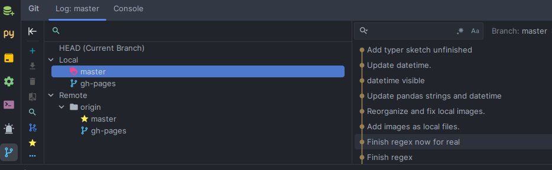
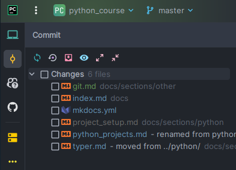
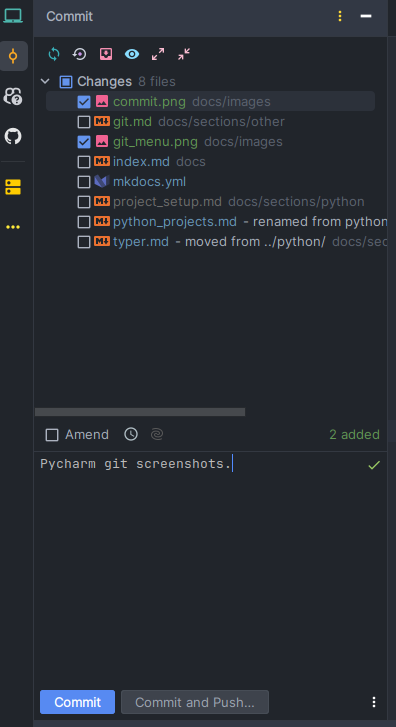
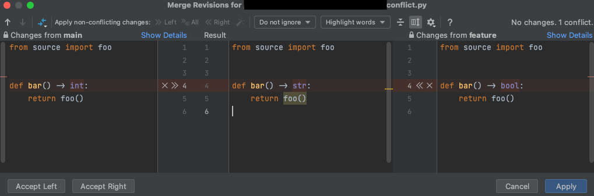

Git¶
Git is a free and open source software for distributed version control1. Git works by keeping track of changes in files, and it is very useful when working in teams, since it allows to merge changes from different people in the same file.
Git is like a tree, where each node is a commit. Each commit has a parent commit, except for the first commit, which has no parent.
Some basic git words that we will encounter often are:
- commit: a snapshot of the repository at a certain point in time. Each commit has a unique identifier (hash).
- branch: since git is like a tree, a branch is a line of commits.
- master: the default branch (lately, this is being considered a bad name, and it is recommended to use
maininstead). - develop: branch where we merge all the features that we are developing. When we are ready to release a new
version, we merge
developintomaster. - origin: the (default name of a) remote repository. This basically means the repository saved in GitHub, Bitbucket, etc.
- merge: when we merge two branches, we take the changes from one branch and apply them to the other branch. After the merge, the two branches will be the same.
- push: send changes from a local repository (your computer) to a remote repository (github, bitbucket, etc).
- pull: send changes from a remote repository to a local repository. We use this when we are working in a team, and we want to get the changes that other people have made to the remote repository into our local repository.
Installation¶
To install git, follow the instructions here for your operating system.
Configuration¶
After installing git, we should configure it with our name and email. This is important, since git will use this information to identify the author of each commit. To do so, we can use the following commands:
git config --global user.name "Your Name"
git config --global user.email "some_email@some_domain.com"
Creating a repository¶
To create a new repository, we should go to the folder where we want to create it, and use the command git init.
This will create a new folder called .git in the current directory. This folder will contain all the information
about the repository (the folder should never be modified manually).
.gitignore¶
A .gitignore file is a text file that tells git which files or folders from our repository to ignore.
This is useful to avoid committing files that we don't want to share with other people, such as temporary files
or files with passwords.
A .gitignore file should be placed in the root directory of our repository. We can create it manually. For example,
if we want to ignore all files with extension .csv inside our folder data, we can write the following in our
.gitignore file:
Git commands¶
Using git from Pycharm¶
Pycharm has a built-in git client, which uses git commands under the hood in a graphical, friendly interface. To use it, we should first create a new project from an existing repository. Then, we can use the git menu on the bottom left of the IDE to check branches and perform other common git operations.

When we want to commit changes, we can use the commit menu on the top left of the IDE:

To create a new commit, we should first select the files that we want to commit, and then write a commit message:

If there are no conflicts (i.e., if the files that we want to commit have not been modified by other people at the same place), then the commit will be created. Otherwise, we will have to solve the conflicts manually. In this case, Pycharm will show us the conflicts and allow us to solve them:

Note
Other IDEs, such as VSCode, also have built-in git clients. For VSCode, see here.
Basic terminal commands¶
We can also use git from the terminal. The most common commands are:
git init: when in a folder, initiate a (new) repositorygit clone /path/to/repository: create a working copy of a repository. When the repository is in a remote server, your command will begit add <filename>: add files to the repository.git status: indicates what files have changed since the last commit.git commit -m "Commit message": create a commit of the repository. The message should indicate what's new in this commit.git fetch --all: downloads commits, files, and refs from a remote repository into your local repo. Fetching is what you do when you want to see what everybody else has been working on.
Branches and merging¶
git branch: list all branches in a repositorygit branch branch_name: create a new branch called branch_namegit checkout branch_name: switch to branchbranch_name(which should already exist)-
git merge branchname: merges branchname to current branch. If there are conflicts, they will remain unmerged. You can decide what to do case by case in your IDE. It's a good idea to delete the branch after, if you will not work in it anymore.Note
It is recommended to merge from the IDE (e.g. Pycharm), since it is easier to decide what to do in the case of merge conflicts.
-
git pull: update your local repository to the newest commit of the (remote) branch. This command is equivalent togit fetchfollowed bygit merge. git push [origin/other_remote_name] [branch_name]: send changes from last commit of local branch tobranch_nameon your remote repository. If the local branch does not exist on the remote repository, we should usegit push -u origin [branch_name](-uis short for--set-upstream-to).git remote add origin <server>: connect your repository to a remote server. In "server" we would put the url of a github repo, e.g. https://github.com/gerardpc/somerepo.git orgit@bitbucket.org:gerardpc/somerepo.git. To remove a remote repository, usegit remote rm <remote-name>. To see the current remote repositories, usegit remote -v.git branch -d branchname: delete a branchgit branch -m new_name: rename the current branch
Other useful tricks¶
By default, github will ask you for your username and password every time you push changes to a repository. To avoid this, you can use ssh keys. To do so, follow the instructions here.
-
More info: http://rogerdudler.github.io/git-guide/ ↩